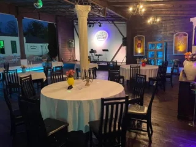
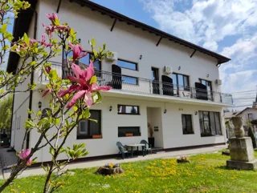
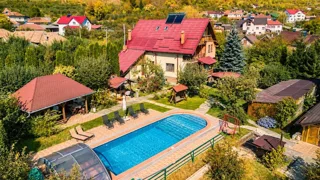
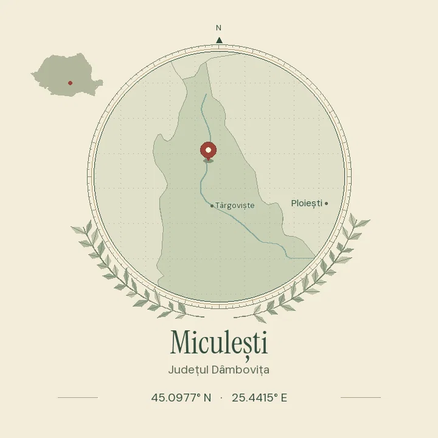
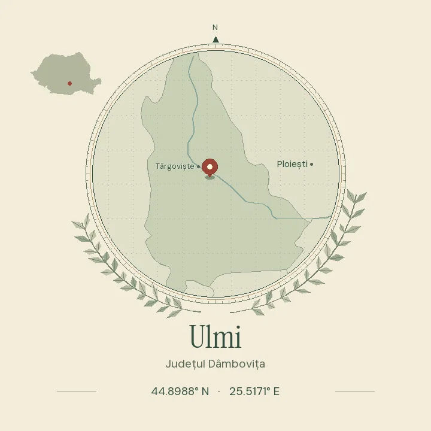
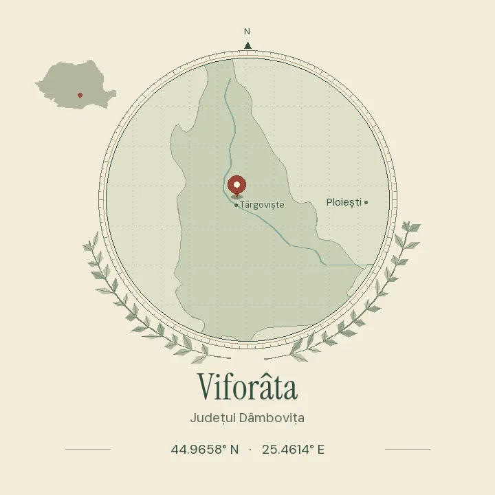
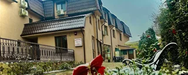
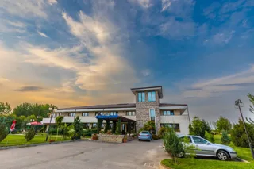
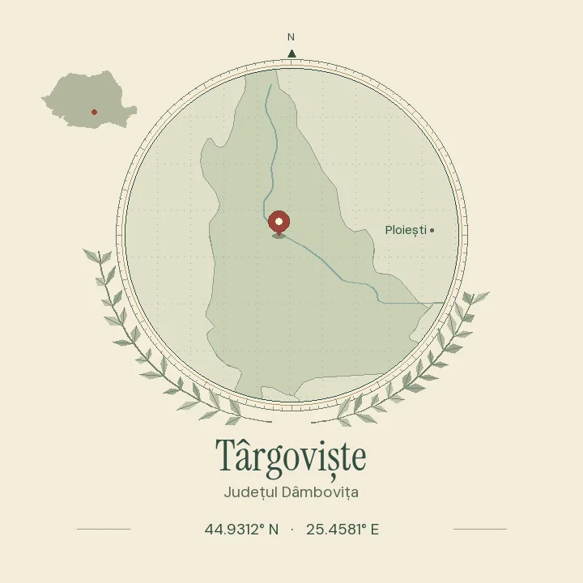

Locații de nuntă în județul Dâmbovița
- locații în director
- 10
- cu cazare în registrul SITUR
- 3
- medie ponderată Google
- 4,0 / 5
- evaluări Google
- 1.822
Cum alegi unde mergi la vizionare
Dacă vă organizați vizionările în jurul Târgoviștei, puteți adăuga pe traseu proprietăți din Viforâta sau Miloșari. Pentru orice curte pe care o vedeți prima dată în fotografii, solicitați un plan cu treptele, aleile și intrarea pe unde se aduce mobilierul.
La proprietatea din Miloșari numită La Conac Resort Team Building, un vizitator descrie piscina în aer liber și parcarea proprie. Dacă vreți să întâmpinați familia lângă apă, verificați pe teren pe unde vin mașinile în același timp. Pentru o adresă mai aproape de Târgoviște, punctul de comparație poate fi numărul de drumuri pe care invitații trebuie să le facă separat în acea zi.
Două adrese pentru o zi de vizionări
Pe hartă, între aceste două proprietăți sunt 4,4 km în linie dreaptă. Deschide indicațiile de drum din fișe ca să vezi traseul pe șosea înainte de a stabili a doua întâlnire.
- Castelul Dărăscu-Enigărescu · DJ718 187, 137005 Viforâta
- Hotel Dâmbovița · Bulevardul Libertății 1, 130009 Târgoviște
Explorează după localitate
Toate locațiile din județul Dâmbovița
Ordinea ține cont de nota Google și de numărul evaluărilor. Cum calculăm ordinea

Fotografie a locației · Sursa fotografiei Miloșari · Cazare în regim hotelier
La Conac Resort Team Building
La Conac Resort Team Building, Miloșari. Fișa din Miloșari include o piscină exterioară, restaurant și parcare proprie.
Unnamed Road, 137271 Miloșari+40 741 443 388
Fotografie a locației · Sursa fotografiei Pucioasa · Bed & Breakfast
Pensiunea Alesia
Pensiunea Alesia. O familie cu doi copii povestește că a stat în apartamentul pensiunii Alesia și că a apreciat spațiul din camere și lumina naturală.
Strada C. Olănescu 1, 135400 Pucioasa+40 730 736 266
Fotografie a locației · Sursa fotografiei Văleni-Dâmbovița · Pensiune
Pensiunea Enothera
Pensiunea Enothera. La Enothera, o familie a sărbătorit primul an al băiețelului lor și își amintește sprijinul personalului pe durata petrecerii.
Strada Valea Mare nr. 147, 137500 Văleni-Dâmbovița+40 739 949 965
Hartă ilustrată Miculești · Pensiune
Pensiunea Cabana din Livada
Pensiunea Cabana din Livada, Miculești. Participanții descriu un loc în care s-au putut concentra și bucura de peisaj între activități.
105345 Miculești+40 727 927 737
Hartă ilustrată Ulmi · Hotel
Pensiunea La Conac ****
Pensiunea La Conac ****. Împarte lista în două înainte de a cere oferta: cei care rămân peste noapte și cei care vin doar pentru ceremonie și masă.
com. Ulmi, sat Matraca, str. Principala, nr. 185A, 137459 Ulmi
Hartă ilustrată Viforâta · Castel
Castelul Dărăscu-Enigărescu
Castel cu turn rotunjit la Viforâta, Dâmbovița: doar 2 evaluări, drum de acces abrupt și nicio informație despre închiriere sau nunți.
DJ718 187, 137005 Viforâta
Fotografie a locației · Sursa fotografiei Târgoviște · Bed & Breakfast
Calea Târgoveților
Pensiune în Târgoviște cu o curte interioară de 4.000 m², parcare și terasă. Ce spun grupurile cazate aici și ce să verifici înainte.
Calea Ialomiței 212, 130142 Târgoviște+40 770 869 830
Fotografie a locației · Sursa fotografiei Lungulețu · Pensiune
Pensiunea Georgia
O familie care a rezervat cinci camere la Georgia a dorit să stea aproape, însă la sosire a primit două camere într-o altă clădire decât celelalte trei.
137280 Lungulețu+40 760 248 401Fotografie a locației · Sursa fotografiei Târgoviște · Hotel
Hotel Dâmbovița
Un oaspete al hotelului Dâmbovița descrie apropierea de obiectivele turistice din Târgoviște și un balcon unde i-ar fi prins bine o masă și două scaune.
Bulevardul Libertății 1, 130009 Târgoviște+40 245 213 370
Hartă ilustrată Târgoviște · Bed & Breakfast
Pensiunea Turistica Chindia
Pensiunea Turistica Chindia, Târgoviște. Un oaspete al pensiunii Chindia a semnalat tavane joase și lipsa unei ferestre în spațiul în care a stat.
Calea Domnească 230, 137395 Târgoviște+40 726 355 514
Întrebări despre locațiile din județul Dâmbovița
Unde pot dormi invitații în județul Dâmbovița?
În registrul de cazare SITUR găsim Pensiunea Alesia (16 locuri de cazare), Hotel Dâmbovița (166 de locuri de cazare), Pensiunea Turistica Chindia (15 locuri de cazare). Verifică ce camere sunt libere pentru noaptea evenimentului.
Ce proprietăți din județul Dâmbovița au grădină sau terasă?
Pensiunea Alesia (grădină); Pensiunea Enothera (grădină, terasă, ponton); Calea Târgoveților (terasă). Cere administratorului condițiile de folosire pentru o petrecere privată.
Care locație din județul Dâmbovița are cele mai multe evaluări Google?
Hotel Dâmbovița are 939 de evaluări în profilul Google folosit la documentare. Evaluările acoperă și alte experiențe la proprietate, inclusiv vizitele fără eveniment.